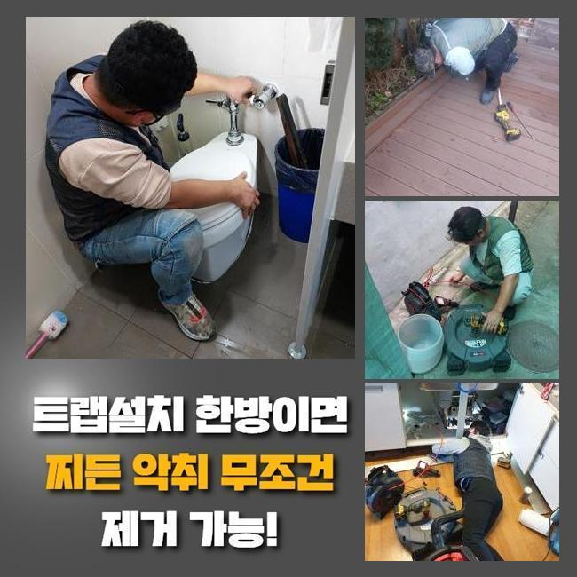
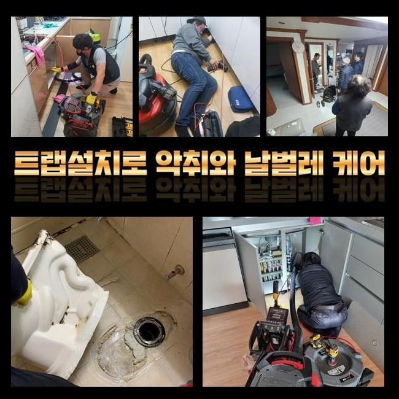
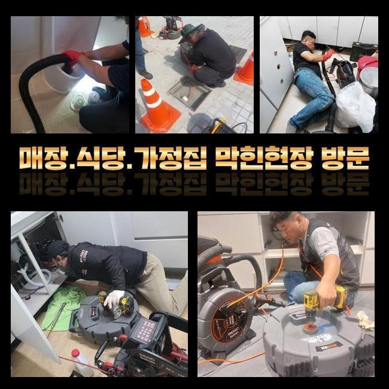
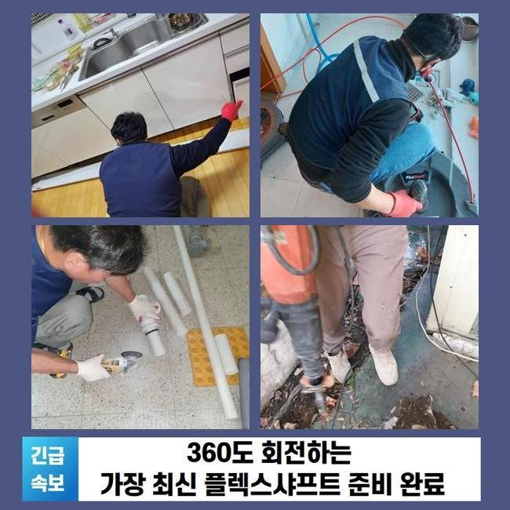
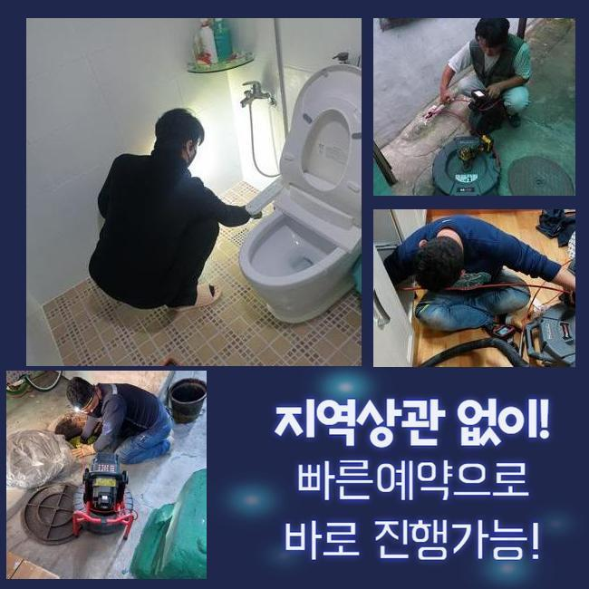
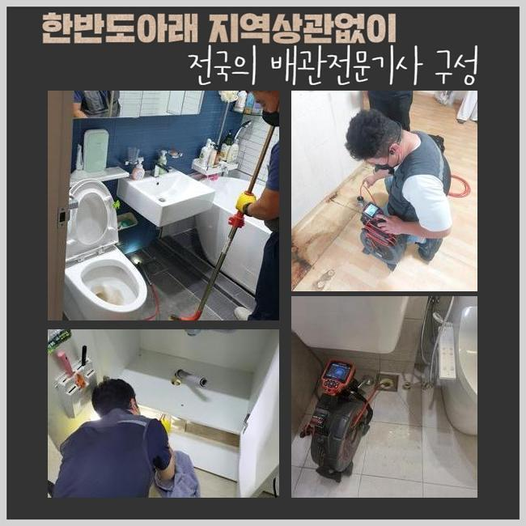
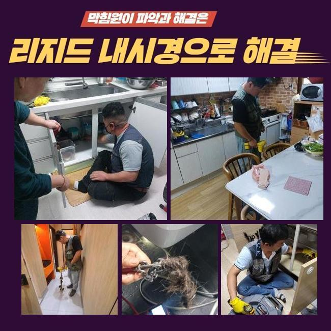

🏠 용인 상갈동씽크대배수구역류 구성동 맨홀역류 통수전문
용인 싱크대막힘 전문 시공 후기

📋 작업 개요
- 위치: 용인
- 서비스 유형: 싱크대막힘, 하수구막힘, 배관막힘, 맨홀막힘, 역류해결, 뚫는업체, 배관청소, 고압세척, 설비공사
- 작업 일시: 2025. 4. 7. 2:11
- 업체명: 하수구수사대 (010-5615-2118)
🔍 문제 상황
용인 상갈동씽크대배수구역류 구성동 맨홀역류 통수전문
주방배관이 막힌상황에서는 여러가지 방책을 통해서 대처해 나갈수 있는데요
일단은 간소한 장비들을 사용하여 정체된 구간을 처리하는 대책이 있죠
뚫어뻥으로 서서히 힘을 가하여 일시적으로 침전물을 정리하는 건데요
급작스레 물막힘이 생겼다면 대개 이런 기술을 활용할수 있답니다
그럼에도 물막힘이 지속된다면 오물제거제를 사용하는 게 좋을 수 있어요
배관클리너는 사용전에 필수로 안내서를 보고 장갑 등을 마련해 두는게 중요한 부분입니다
피부층에 부담을 주는 화학물질이 내포되었을 가망성도 생각하지 않을수 없기 때문이랍니다
그러한 정황을 직면하는데 부담을 느끼신다면 집안의 식초나 베이킹소다 같은 것들을 써보시는게 합리적입니다
그것들을 섞어서 하수구에 흘려보내면 잔존물들은 분리되면서 내려가기도 합니다
데운물을 이와 함께 부어주는 것또한 권장하는 내용입니다
하수관을 분해해서 세척하는 방책도 있어요
개수대 아래쪽의 하수관을 탈거해 이물이나 석회물질을 제거하는데요
분해청소할 생각이라면 장비를 잘 챙기고 조립법을 명확히 숙지하고 조심스럽게 작업하셔야 합니다
분리전에는 하수관에 누적돼있는 생활하수를 미리미리 제거하는 게 합당하죠

🔎 원인 분석
💡 전문가 진단: 정밀 진단 장비를 사용하여 슬러지의 고착 여부를 판명하고 타격/세척 작업을 실시했습니다.
이러한 방안으로는 처리가 힘들다 생각된다면 고수압 청소기기를 활용하는걸 고려해보는 게 마땅합니다
해당되는 기계는 강한 물살을 활용하여 관로안을 소제하고 단단한 이물제거에도 효과가 있어요
만일에 해당되는 방책들이 불가능한 상황에서는 배관기술자에게 도움받는게 합당하죠
섣부르게 뚫음을 실시하면서 배관이 훼손되는 양상이 발현될수도 있어서에요
한번더 배수설비의 주기적인 검사가 필요하답니다
음식물이나 기름기가 누적되지 않게끔 주의를 기울이고 합당한 방도를 마련해서 배수설비를 청결하게 유지하는거죠
이런 방식으로 관리를 해나가면 하수구의 막힘현상을 막을수가 있는겁니다
주방배수관에서 막힘이 생겨서 의뢰주신 현장에 당도한 저희는 곧바로 배수관을 점검해 보았습니다
고장발생 장소가 예측보다 깊은지점에 위치하고 있어서 세밀한 탐지가 시행되어야만 했죠
저희팀은 이를 바탕으로 타공을 우선 감행하기로 결정내렸죠
해당하는 곳은 굴삭을 통하여 정비를 안한다면 정리하기 힘겨운 상황이었기 때문이죠
타공공정은 물막힘이 발발한 배관에 될수있으면 근접하게 접근하게끔 시행하였어요
공사를 단행하기전 근방에 장애물들을 치웠으며 보호장비를 갖추었습니다
주방시설에서 저희는 굴착 작업으로 관로에 진입하면서 고인 이물과 노폐물을 정리할수가 있었답니다
공정중에 자주 발발하는 이상현상을 엄격히 분석하면서 조심스레 제거해 나갔어요

🔧 작업 과정
타공작업이 끝나고 내부상황을 관찰하니 다양한 퇴적물이 누증되었다는 사실을 파악하게 되었죠
주방시설에서 저희측은 곧바로 내시경장비를 활용하여 관로 안쪽을 검사하기로 했어요
배수관 청소기는 작은 틈에서도 내부의 정황을 명확하게 보여주고 막힘정황을 한층더 자세하게 알수있게끔 만들어줍니다
배관내시경을 관로에 진입시키니 즉각 관로안의 막힘상황이 파악되었죠
자세히 살펴보니 벽면에 적체된 잔재들이 목도되었습니다
잔류 물질들은 슬러지 뭉치와 유분으로 형성된 상태였고 그것은 물막힘의 주범이었죠
내시경으로서 체증이 일어난 곳을 자세히 관찰하며 명확한 구역을 기록할수 있었습니다
공정 가운데 총체적인 상황을 진단하며 별도의 세정 방책을 계획할수 있었어요
내시경카메라의 도움으로 어떤물질이 주를 이루고있는지 분명히 알아낼수 있었기에 추후세정에 대한 플랜을 마련할수 있었어요
내시경을 통하여 수집한 사항을 종합하여 최선의 방책을 강구하였기에 시공시간을 효율적으로 관리할수 있었답니다
이곳에서 정비를 하는동안 틈틈이 고수압청소기로 배수관을 정비하기로 합니다
고압청소기를 관로에 넣은뒤 강력한 물살로 견고하게 접착돼있던 찌꺼기를 없앨수가 있었답니다
배수가 이루어지며 관로속에 체류하던 침전물과 기름층이 소멸되는 장면이 배관카메라에 선명하게 드러났습니다
해당하는 작업은 개수대의 배관청소에 굉장히 좋았다고 볼수 있습니다
물의 압력수준을 컨트롤하면서 개별적인 상태에 따라서 물청소를 수행하였죠
잔존물들은 더 이상 잔류못하도록 세심히 업무를 시행했습니다
고압청소기를 이용해 청소하며 배수기능이 조금씩 나아지는걸 확인하게 되었답니다
고압청소기를 통해 청소를 한뒤 한번더 내시경 카메라로 파이프 안을 검사하였습니다
그리고 작업전과 대조적으로 깔끔해진 모습을 관찰할수 있었답니다
관로속의 찌꺼기가 상당부분 감소해서 상태가 회복된것을 보고 작업을 종료할수 있었죠
높은수준의 압력을 바탕으로 공정을 하는것이기 때문에 더더욱 꼼꼼하게 작업할 필요가 있었습니다
조금이라도 실수가 일어난다면 감당하기 힘든 트러블이 생길수가 있어요
그렇기에 저희들은 전체적인 밸런스를 헤아리면서 시공을 작업했답니다
해당 현장의 막힘이 조금은 해결하기 복잡한 상태였는데 다행히도 빨리 종료되었습니다


✅ 작업 완료
주위를 정리하면서 싱크대의 배관을 두 세차례 테스트해보았어요
정상적으로 빠져나가는 모습을 수회 확인하였고 의뢰인께는 싱크대 사용요령까지 일러드렸습니다
내시경기기와 물세척 과정은 문제해결을 하는데 열쇠였습니다
하수관 체증현상이 일어났다면 신속하게 대처하는게 필요하답니다
저희팀은 손님의 요청사항을 확인하여 방문시기를 정해드리고 시공해 드린다는 것을 말씀드립니다
배관에 어떤 문제가 생겼다면 방치하지말고 저희에게 전화해주시길 바라요




⚠️ 주방 싱크대 배관 막힘 예방 수칙
- ✅ 기름기가 묻은 식기나 프라이팬은 설거지 전 키친타올로 반드시 기름때를 닦아내세요.
- ✅ 주기적으로 싱크대 개수대에 뜨거운 물을 가득 받아 한 번에 내려 배관 내부 기름을 씻어내세요.
- ✅ 배수구 거름망을 미세한 필터로 사용하시고 음식물 찌꺼기가 틈으로 새어 들지 않게 관리하세요.
- ✅ 베이킹소다와 식초를 뜨거운 물과 함께 일주일에 한 번씩 부어주면 배관 살균과 막힘 예방에 좋습니다.
💡 핵심 정리
- 확실한 장비 작업(내시경 점검 및 샤프트 스케일링)으로 원인을 뿌리 뽑습니다.
- 작업 후 1년 이내에 동일한 부위 재발 시 100% 무상 A/S 서비스를 보장합니다.
- 서울 · 경기 · 인천 전 지역에 24시간 언제든 긴급 출동할 수 있도록 항시 대기 중입니다.
❓ 자주 묻는 질문 (FAQ)
🚨 용인 싱크대막힘 문제로 고민이신가요?
정확한 원인 진단과 확실한 시공으로 재발 없는 해결을 약속드립니다.
24시간 긴급 출동 | 서울 · 경기 · 인천 전지역 | 1년 내 재발 시 무상 A/S